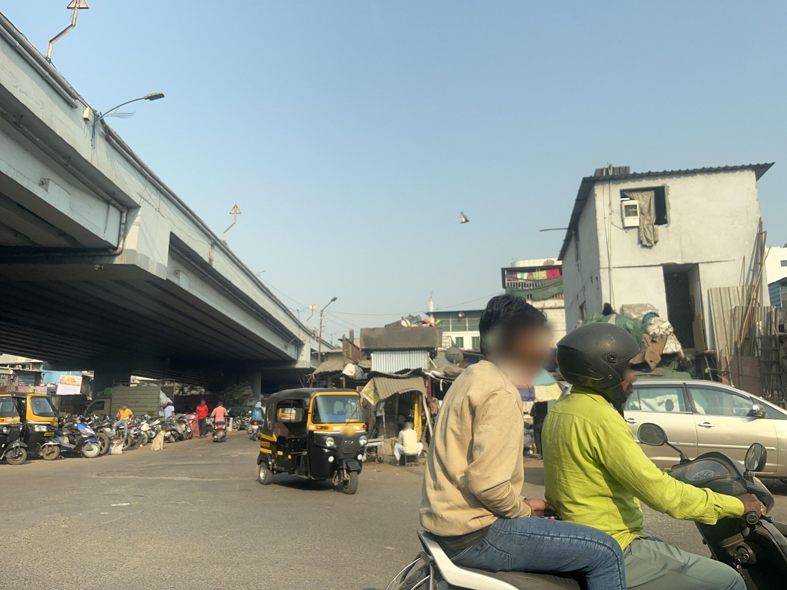
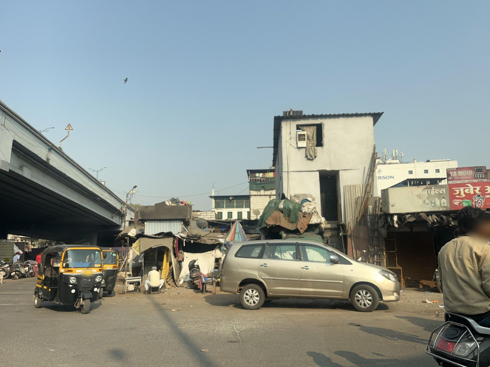
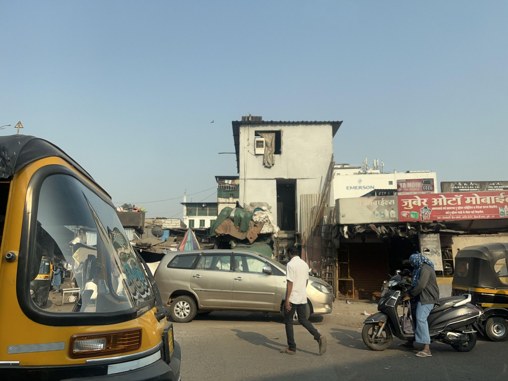
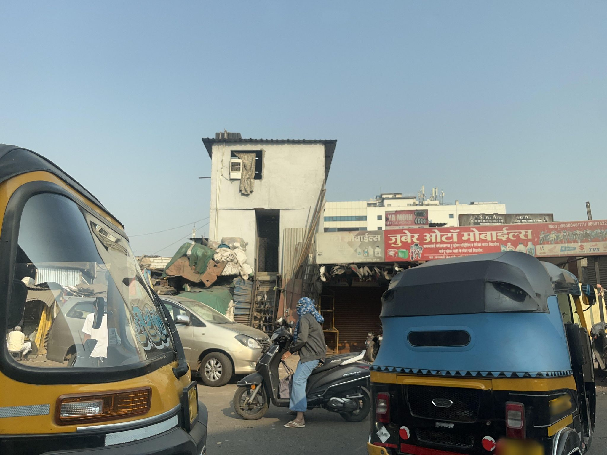
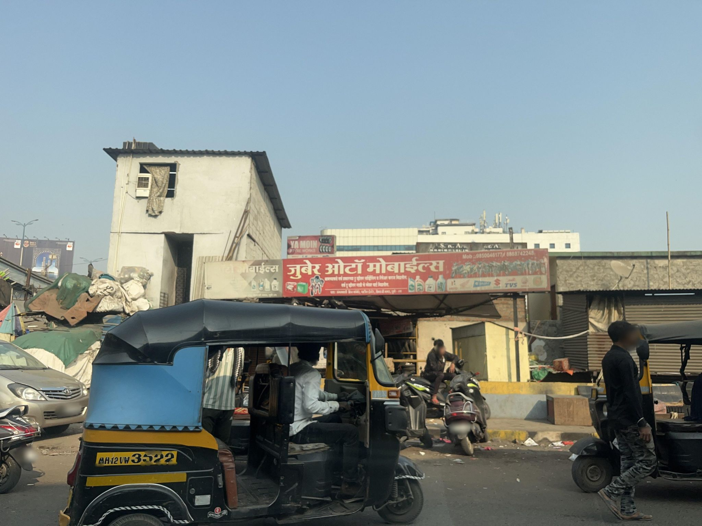
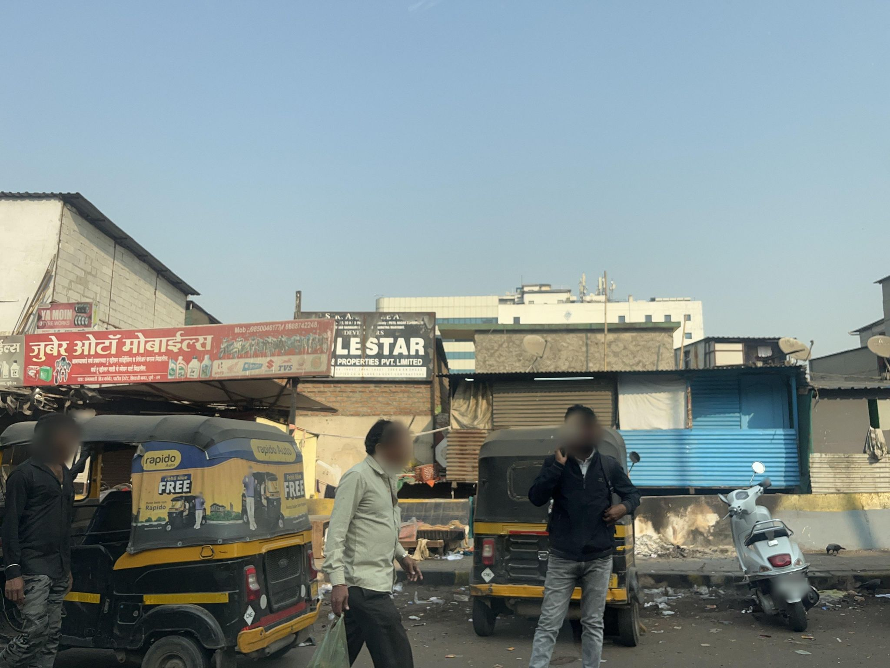
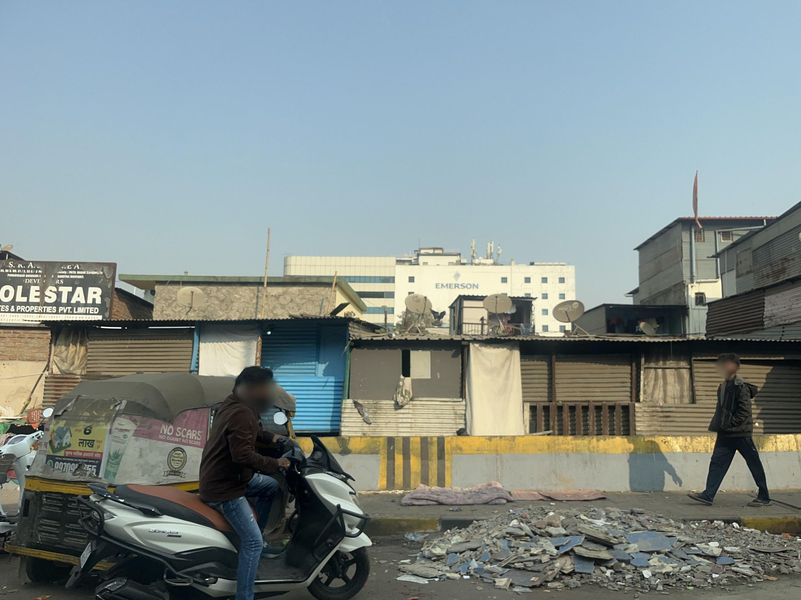
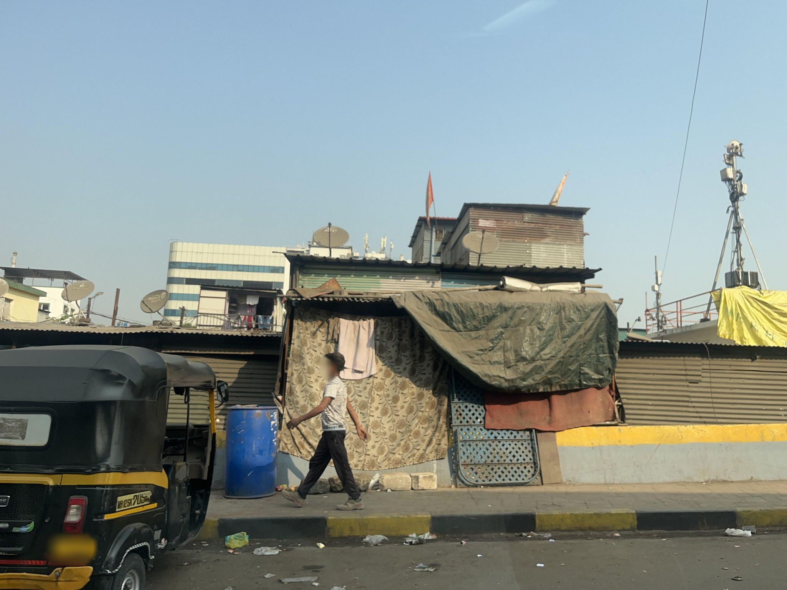
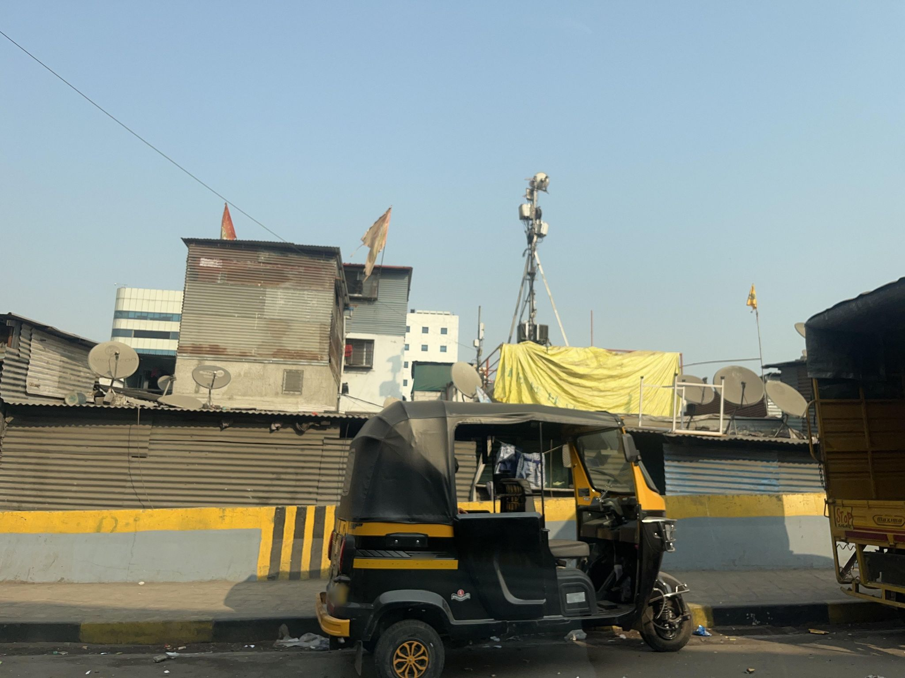

Visibility limited
1391554565490383
Motorcycle riders partly block the workshop frontage; stacked materials are visible above the shops but no confirmed roadside dump is present.
GEOCLEAN AI · MAPILLARY STREET-LEVEL METHOD V2
Nine consecutive frames around image 1347361014075762 show stored workshop materials, scattered litter below the label threshold, and a separate construction-rubble pile. No project-class positive was confirmed.

Motorcycle riders partly block the workshop frontage; stacked materials are visible above the shops but no confirmed roadside dump is present.

A clearer approach shows sacks and covered materials stacked above the workshop area, consistent with storage rather than roadside dumping.

The same elevated stack remains beside the auto-parts shop; street-level material is sparse and does not form a dump.

The elevated sacks and tarps are visibly tied to the workshop structure, while vehicles partly block the road edge.

Adjacent frames show the sacks, cardboard, and tarps stacked above and behind the auto-parts shop as stored material, rather than a roadside dump.

Loose wrappers and small items are scattered along the shopfront edge, below the project’s roadside-dump threshold.

A large ground pile consists of broken tiles and masonry from construction or demolition, excluded from the household-waste target.

Sparse wrappers and small debris line the roadside, but they do not form a concentrated dump.

Shop structures and median edge show only isolated scraps, with no target accumulation.